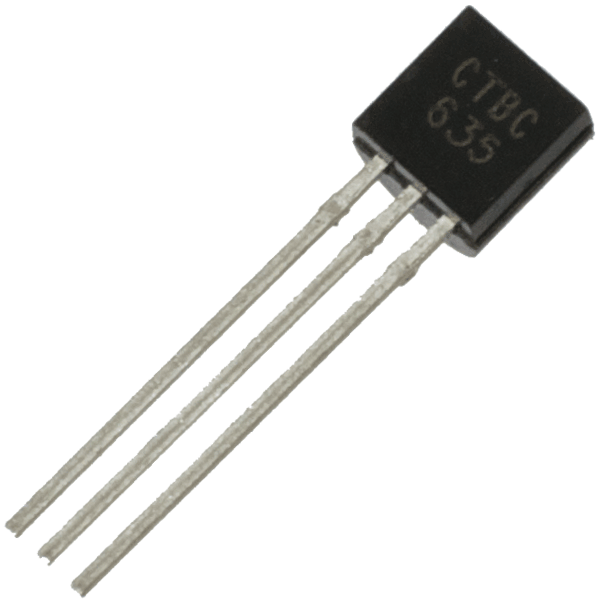
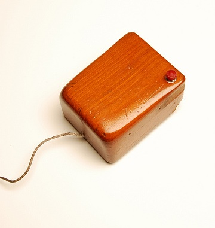

-
Inicio de la segunda generación
-

1956
Aparecen los transistores. Reemplazan a los tubos al vacío de la primera generación, ya que represaban 40 tubos al vacío y eran más pequeños y duraderos.
-

1962
Steve Rusell del MIT crea el Spacewar, el primer videojuego.
-

1964
Douglas Engelbart inventa el mouse.